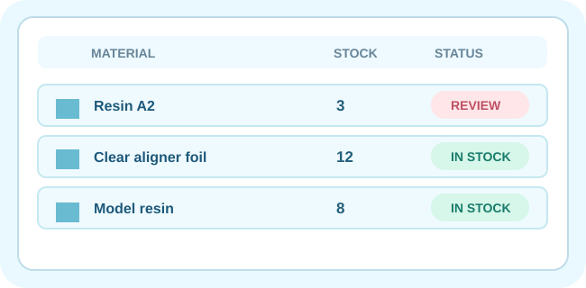

PIGA · INVENTAR & MATERIAL
Fehlbestand erkennen. Bestellung vorbereiten.
Die lokale Bestandsprüfung erstellt eine nachvollziehbare Einkaufsliste. Mengen und Artikel lassen sich vor dem Kauf kontrollieren; Bestellungen und Zahlungen erfolgen nur nach ausdrücklicher Freigabe außerhalb der App.

Keine automatische Shopanbindung bestätigt. Der öffentliche Händler-Shop
kfoshop24.com wurde recherchiert; die Warenkorb-API, Produktzuordnungen, Preise und Zugangsrechte sind nicht verifiziert. Diese Seite kauft nichts, ruft keinen Shop-Warenkorb auf und löst keine Kosten aus.Artikel unter Mindestbestand–
KaufstatusNICHT BESTELLT
FreigabestufeGATE 2 BLOCK
Nachbestellvorschläge aus deiner Inventur
Artikel, lokale Menge und Packungsgrößen werden aus dem vorhandenen Gerätespeicher gelesen.
Bestände werden gelesen …
Noch kein lokaler Einkaufsvorschlag erstellt.
Produkte und Mengen müssen von einem autorisierten Mitarbeiter auf der richtigen Händlerseite abgeglichen werden. Eine echte Warenkorbbefüllung darf erst nach gesicherter Händler-API, Artikel-Mapping, Rollenprüfung und expliziter Einwilligung implementiert werden.